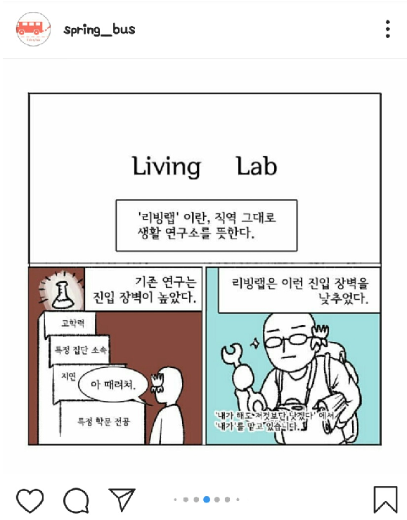
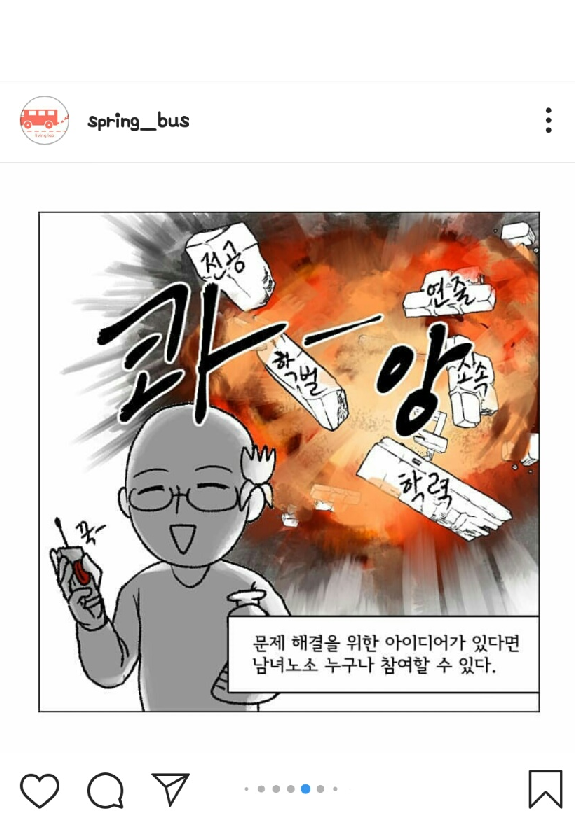

시민버스커_springbus
리빙랩이란
시민버스커 소개
(부록)춘천버스의 문제
시민버스커의 발자국
리빙랩(living lab)이란?
'생활 실험실'
이란 뜻의 리빙랩은,
'사용자, 즉 시민이 문제 해결 과정에서 주도력을 발휘할 수 있도록 설계된 개방적 현신 실험의 환경'
또는
'사용자 주도의 개방적 혁신을 위한 공공-민간(자본)-시민의 협력체'
을 가리킵니다. 쉽게 말해 마을공동체를 가꾸고 지속적으로 지역문제를 해결하기 위한 활동가를 발굴하는 사업입니다.
시민버스커 인스타그램 spring_bus
 